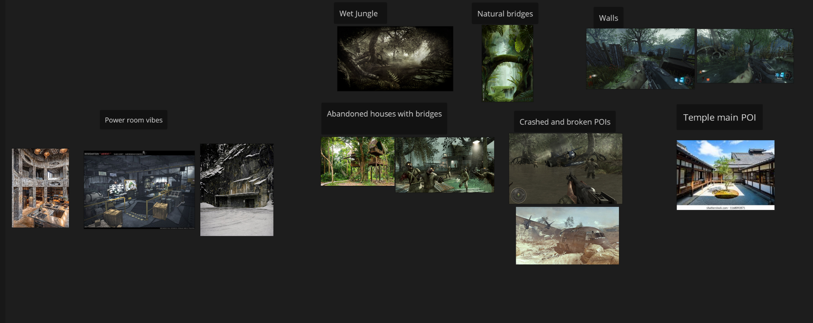
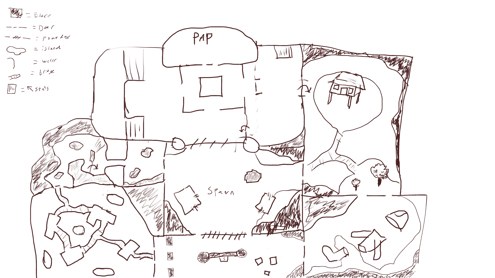
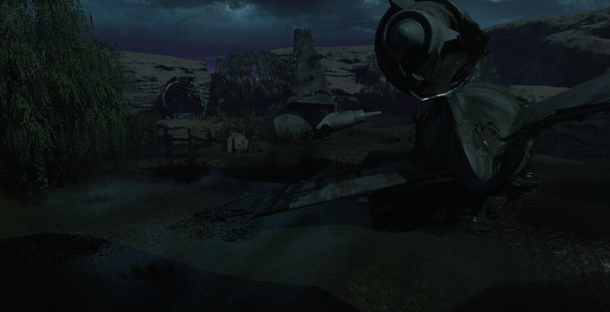
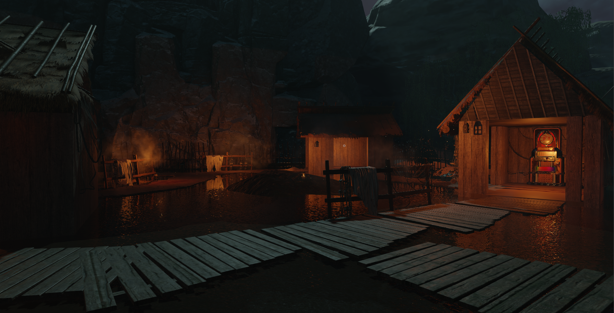
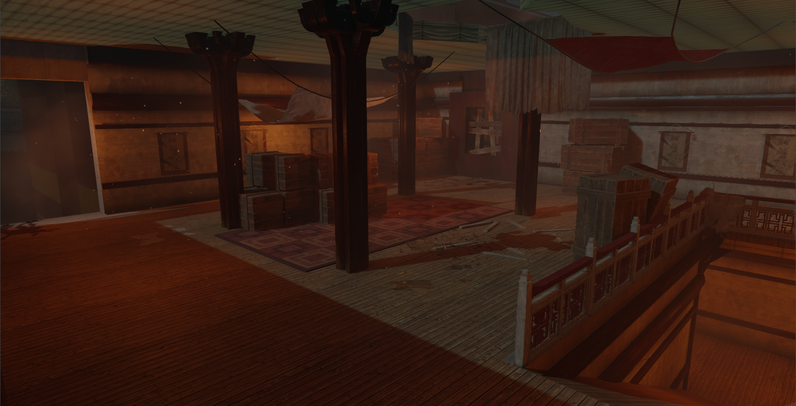
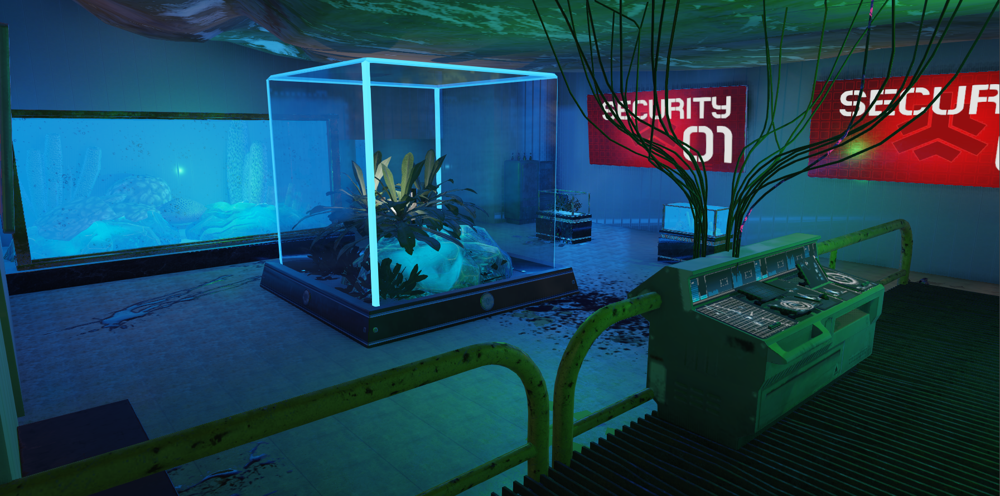
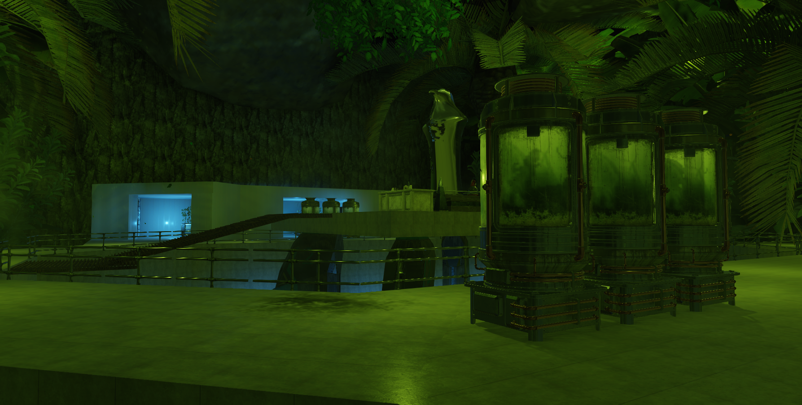
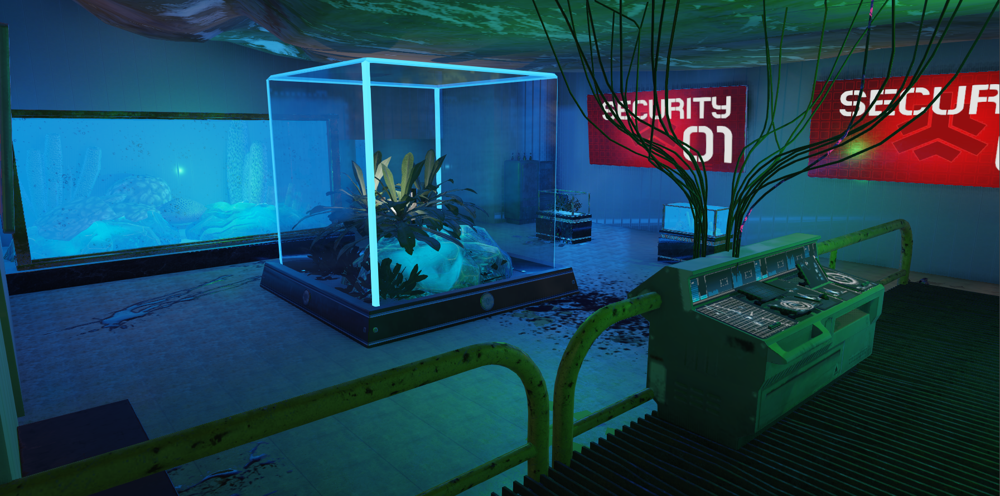
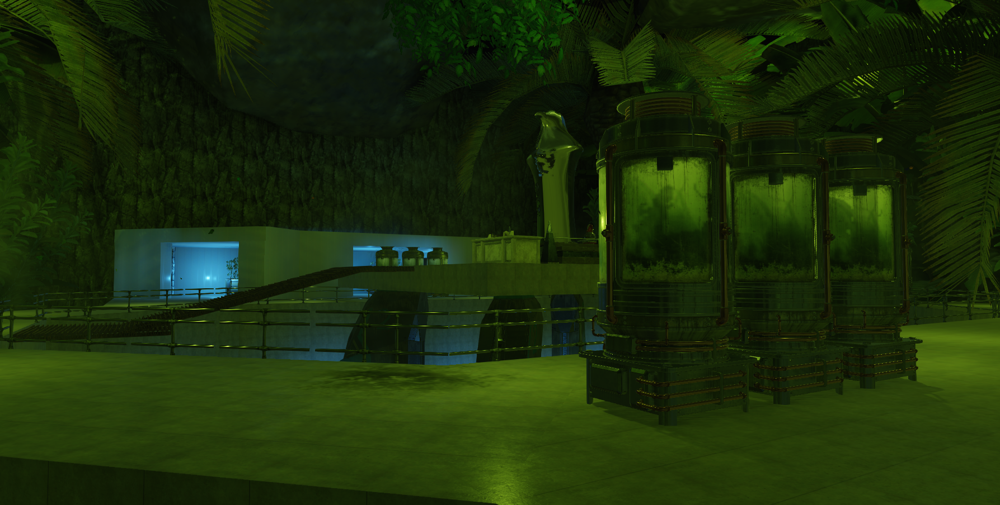

Project Overview
For this project I wanted to create a Zombies experience similar to what I had back in 2008-2013 when I played Zombies with my friends, neighbors, and whole family. This meant I used Kino der Toten, an offical Black Ops Zombies map, as a golden standard since
it is famously great for new and casual players, like we were back then. But since the community has evolved in the last decade I also played through the offical Black Ops 3 maps and a bunch of the most popular community made Workshop maps out there. This gave me
an idea of what the player base expects and appreciates!
The concept for the map was that of a temple and military research facility located right next to each other in a Japanese swamp. I then started thinking of cool things that could happen and be in this swamp, and drafted a rough story.
Level Design
With a bunch of cool ideas for what the different "rooms" could be I setup a PureRef mood/reference board and started sketching out a rough layout. Then I quickly blocked out most of the level so that I could start testing myself, iterate, and then let friends
playtest for more feedback.


An important goal of mine was to make every room feel cool, unqique and worthwhile. In many maps I grew up playing I felt that not all rooms were that interesting, they just felt like a necessary evil to get to the cool parts. To make every room feel cool I
put effort into making them stand out and be distinct. One the areas would be large with a crashed plane that you could run around on top of, another would be a nearly flooded fishing village, and of course the temple and research facility.
Each of these areas also had different ways of moving around, be it on narrow bridges or vertically among cliffs or plane wings, I made sure that the player could find an area that they just enjoyed playing in.
Easter Egg
One of the things I missed out on growing up and found out about during my research for this project was "Easter Eggs", essentially secret quests that would reward the player. I decided to implent a couple of simple easter eggs, ranging from hiding a couple of Teddy Bears around the
map that the player would interact with to start playing a classic Black Ops song and unlock another perk slot. There were also skulls around the map that the player would infuse by killing zombies around, which would give them an immidate random reward and eventually unlock
a secret area, and so on. If the player completed most of these simple easter eggs, they would have unlocked a couple of new areas, perks and secret weapons.
I deliberatly kept the easter eggs simple and easy to figure out since I didn't count on the community working together to discover and solve complicated ciphers and puzzles like they do with official maps. This seemed to have worked out quite well, with the map and easter egg
being well received. Some more hardcore players excpeted a bit more, so maybe I could have added an ultra rare easter egg as well. The simplicity of the scripting also felt well scoped for a first project using GSC.
Art
Art is one of the skills I am trying to develop, and since I noticed that the community tended to appreciate art of design, this was a perfect opporunity for some practice. I ended up spending a lot of more time on set dressing and lighting than I had anticipated,
but I'm happy with the results! I believe that the version of the map I ended up with much better conveys the setting and is generally just more fun because of it than a greybox would have been.
*weather effects missing from editor screenshots



 


